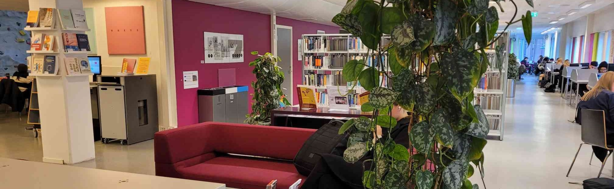

[Intro] A long, long time ago In a galaxy far away Naboo was under an attack And I thought me and Qui-Gon Jinn Could talk the Federation into Maybe cutting them a little slack But their response, it didn't thrill us They locked the doors and tried to kill us We escaped from that gas Then met Jar Jar and Boss Nass We took a bongo from the scene And we went to Theed to see the Queen We all wound up on Tatooine That's where we found this boy...
[Chorus] Oh my, my, this here Anakin guy May be Vader someday later, now he's just a small fry And he left his home and kissed his mommy goodbye Sayin', "Soon, I'm gonna be a Jedi" "Soon, I'm gonna be a Jedi"
Photo by Sara Yldrim
The P35 library is ln the 3rd floor, and has a convenient digital search system that can be accessed using any of the library computers. There's also ample tables and sitting areas.
Photo by Hannah Sepanak
Thank you for visiting the OsloMet P35 building, please visit again soon!